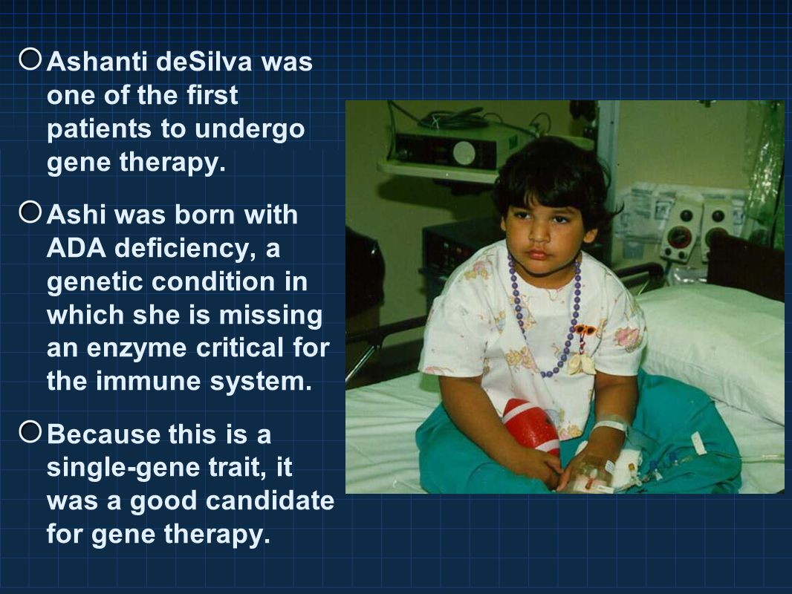

How Gene Therapy Has Helped the World
Gene therapy has revolutionized medicine by offering a way to treat diseases at their genetic root, rather than just managing symptoms. One of its most famous successes was the treatment of Severe Combined Immunodeficiency (SCID), often called "bubble boy disease." In 1990, the first-ever gene therapy trial helped a young girl, Ashanti DeSilva, regain her immune function, proving that altering faulty genes could transform lives. Since then, gene therapy has been used to tackle previously untreatable conditions like blindness, blood disorders, and certain cancers. By directly fixing genetic errors, it has given hope to millions and opened the door to curing diseases once thought incurable.